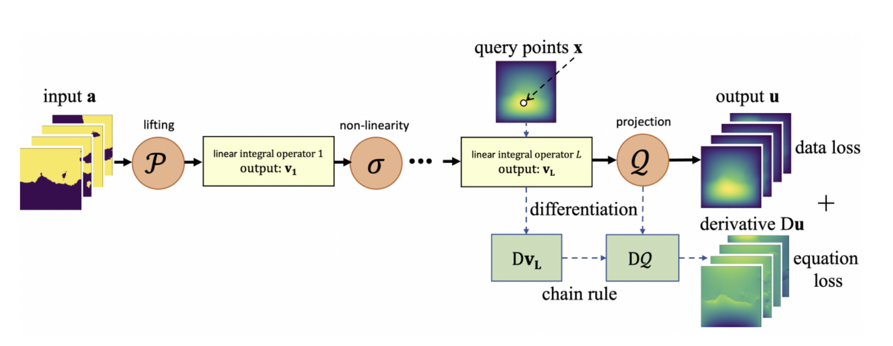

Physics Informed U-shaped Neural Operator (PUNO)
PUNO is a novel neural network architecture for solving partial differential equations (PDEs). It combines physics-based constraints with a data-driven U-shaped neural operator to learn mappings between function spaces.
PUNO first trains the neural operator on data and physics-based losses over a family of PDEs. This allows it to learn a general solution operator. The U-shaped architecture enables deeper learning while efficiently encoding information.
After this operator learning phase, PUNO fine-tunes the operator on a specific PDE instance using additional physics-informed losses. This helps overcome optimization difficulties faced by purely physics-informed networks.
Our Work
We implemented PUNO and tested it on the 2D Darcy Flow equation, a linear elliptic PDE. We trained several variants, including vanilla data-driven operators (FNO, UNO) and physics-informed versions (PUNO).
PUNO variants achieve lower loss compared to baseline UNO, indicating the physics-informed losses help optimize for the specific instance. However, FNO still achieves lowest loss likely due to its higher parameterization.
Results
We evaluated both the Lp physics-informed loss and MSE on the test instance. PUNO and PUNO-13 (deeper version) obtain lower Lp losses than vanilla UNO/UNO-13, showing the benefit of physics-based optimization.